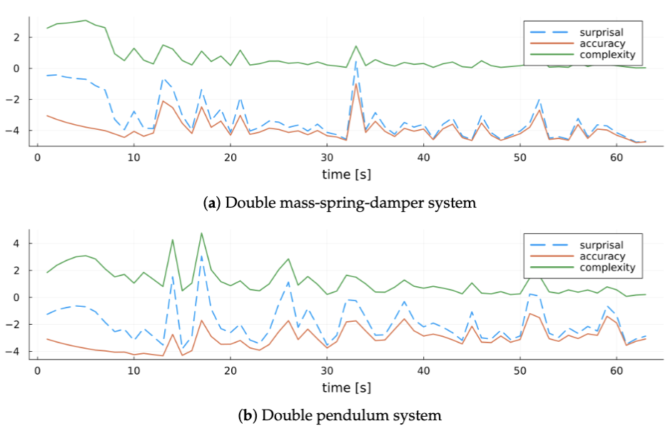

I am a PhD candidate at BIASlab,
TU Eindhoven, supervised by
Wouter Kouw.
My research focuses on sample-efficient robot learning
— designing agents that learn to control physical robots from far fewer
interactions than current reinforcement learning methods require.
I build probabilistic world models that maintain a
full Bayesian posterior over their parameters and update exactly at each
timestep, and I develop model-based agents that use
expected free energy (EFE)
as their planning objective — a variational quantity from the
active inference
framework that replaces the hand-designed reward function and jointly
drives goal attainment and uncertainty reduction, similar in spirit to
information-seeking, curiosity-driven model-based RL. I validate these
methods on real robotic hardware.
Before my PhD I worked as a researcher at
Fraunhofer IIS,
where I applied deep reinforcement learning to autonomous driving,
led an interpretable RL project, and built large-scale HPC training
pipelines. For my MSc thesis I collected real RC car motion-capture
data, trained an LSTM-based world model on it, and used that learned
simulator to train a DDQN agent entirely in simulation before
deploying the policy on the physical car.
I am broadly interested in the following areas:
Active inference
A model-based framework for perception and action grounded in the Free Energy Principle. Agents simultaneously learn a world model via variational Bayesian inference and select actions by minimising a single variational objective — expected free energy — without a hand-designed reward function.
Expected free energy (EFE)
The planning objective used in active inference. It decomposes into a goal-seeking exploitation term (cross-entropy to a goal prior) and information-seeking exploration terms (a mutual-information term between predicted outputs and model parameters, plus an expected-ambiguity term). Analogous in spirit to information-seeking / curiosity-driven objectives in model-based RL.
MARX (our work)
Multivariate AutoRegressive model with eXogenous inputs — a probabilistic autoregressive dynamics model we introduced, with a matrix normal-Wishart conjugate prior that admits exact recursive Bayesian updates and a closed-form Student-t posterior predictive distribution.
MARX-EFE / CARX-EFE (our work)
Our agents that pair a MARX world model with EFE-based action selection. CARX-EFE couples scalar autoregressive models for multi-joint systems; MARX-EFE extends this to the full multivariate setting with multi-step receding-horizon planning.

Probabilistic world models
I design dynamics models that maintain a full Bayesian posterior
over their parameters and update exactly at each timestep, giving
calibrated uncertainty estimates without gradient descent or
replay buffers. This uncertainty is what makes the downstream
agent able to reason about what it does and does not yet know.
I develop model-based agents whose planning objective decomposes
into a goal-seeking exploitation term and an information-seeking
exploration term, with no hand-designed reward function. The
balance between the two emerges automatically as the agent's
model uncertainty evolves over time.
A key motivation for probabilistic world models is making
sample-efficient learning tractable on physical hardware. I
deploy learned controllers directly on real robots — without
simulation pre-training — to validate that sample efficiency
gains hold outside the simulator.
Sample efficiency on physical hardware ·
sim-to-real transfer · quadruped locomotion ·
learning from scratch without demonstrations Bittle quadruped,
RC car MSc thesis
Publications and preprints
Papers sorted by recency.
Representative papers are highlighted.
Click a thumbnail to enlarge; click "more" for a short summary.
Autoregressive Active Inference for Sample-Efficient Quadruped Control
Tim Nisslbeck, Wouter M Kouw In preparation, 2026
We deploy a model-based robot learning agent directly on a real Petoi
Bittle quadruped for obstacle avoidance — using only onboard IMU and
infrared sensors, no simulation, no pre-training. The agent maintains
a MARX world model that
updates via exact Bayesian inference at each timestep and selects
actions by minimising
expected free energy (EFE),
a variational objective that automatically balances goal attainment
with active exploration. We compare against the model-based RL baseline
PILCO and evaluate sample efficiency.
We study how prior hyperparameter choices shape the
EFE objective of
the MARX-EFE agent.
Visualising the objective decomposed into its
goal-seeking and information-seeking components over control space
shows that, for example, increasing the prior scale matrix Ω shifts
the balance within the information-seeking term from the
mutual-information component towards the expected-ambiguity component,
while the goal-seeking prior parameters S* and
m* steer the direction and sharpness of goal attainment.
The free energy-minimising agent reaches the goal prior sooner than a
standard model-predictive controller.
Reformulates the MARX-EFE
agent — Bayesian world model updates and multi-step EFE planning —
as message passing on a Forney-style factor graph, enabling a modular,
distributed implementation. This connects active inference to the
broader probabilistic graphical model literature and is validated on
a robot navigation task.
Exploration versus Exploitation in Autoregressive Free Energy Minimising Agents
Tim Nisslbeck, Wouter M Kouw Preprint, 2025
Full derivation of the MARX-EFE
agent from first principles. The MARX world model admits exact
recursive Bayesian updates and a closed-form posterior predictive
distribution. The planning objective —
expected free energy —
decomposes analytically into a goal-seeking exploitation term and
information-seeking exploration terms, with no reward engineering
required.
Introduces the MARX estimator — a probabilistic autoregressive dynamics
model with exact online Bayesian updates — cast as message passing on a
factor graph. A novel decomposition of model surprisal into accuracy and
complexity terms enables interpretable model selection. Validated on
simulated autoregressive systems and a double mass-spring-damper.
Proposes a recursive Bayesian estimation procedure for multivariate
autoregressive dynamics models with exogenous inputs, formulated as
message passing on a factor graph. Produces full posterior
distributions over model parameters and noise precision, with
competitive performance on a double mass-spring-damper benchmark.
Insights into Sample-Efficient Learning of Quadrupedal Robot Locomotion
Tim Nisslbeck, Wouter M Kouw Technical report, 2024
Reviews and empirically validates sample-efficiency principles for
RL-based quadruped locomotion — reward, action, and observation space
design; off-policy learning; model-based methods; and temporal update
strategies — using a simulated Petoi Bittle platform under controlled
conditions.
Introduces CARX-EFE
(Coupled AutoRegressive models with eXogenous inputs, controlled via
Expected Free Energy) — multiple scalar active inference agents that
share observation histories to jointly control multi-input
multi-output dynamical systems. On a double mass-spring-damper,
coupled agents achieve lower prediction error and better goal
alignment than independent per-joint agents.
A co-authored study from my time at Fraunhofer IIS. A TD3 (Twin
Delayed DDPG) deep RL agent is trained in a high-fidelity simulator
to take over steering, acceleration, and braking and avoid a
stationary obstacle in a high-speed collision-avoidance scenario.
Domain randomisation over vehicle speed and obstacle distance is used
to support sim-to-real transfer: the randomised policy generalises
substantially better across unseen speed and distance configurations
than policies trained on a single fixed version of the task.
Learning a World Model for Sim-to-Real Deep Reinforcement Learning (MSc Thesis)
Tim Nisslbeck MSc thesis · Fraunhofer IIS, 2018
Real RC car motion-capture data was collected using an ART motion
capture system and fused with onboard IMU readings. An LSTM-based world
model was trained on this data to approximate the vehicle's
state-transition dynamics. A DDQN agent was then trained entirely inside
the learned simulator — without any interaction with the physical car —
and the resulting policy was successfully deployed on the real Tamiya
TT-02 RC car, performing slalom, figure-eight, and lane-following
manoeuvres.
A complete PyBullet physics simulation of the Petoi Bittle quadruped,
built from scratch to support active inference and RL experiments.
Includes URDF model, IMU and infrared sensor emulation, and a
Gym-compatible step interface.
I regularly go birding in the Netherlands and Germany and contribute
observations to eBird and photographs and audio recordings to the
Macaulay Library.